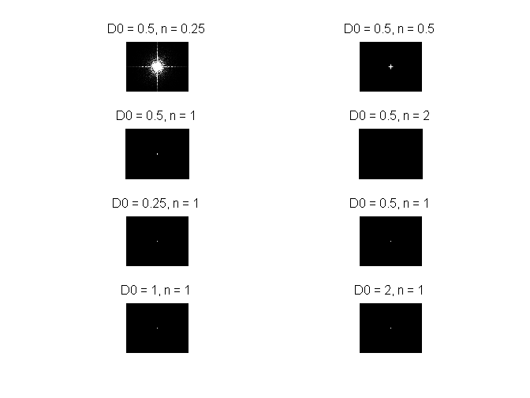

Contents
% Script for Project-03 % Author: Michèle Wyss, 10-104-123
1. Sampling and aliasing
a)
clear all; N = 16; % Define function handle f. For a given k, % f(k) is a function handle to the anonymous function % @(x) (cos(...)). Like this, it's easy to bind k to a certain value. f = @(k,x) (@(x)(cos(x * 2 * pi * k * 1/N))); for k = 1:16 % Bind f to the given k. fk is the function handle of f with fixed % value k. fk = f(k); %%%%%%%%%%%%%%%% % Generate plot %%%%%%%%%%%%%%%% subplot(4,4,k); % "Continuous" function fplot(fk,[0 N]); hold on; % Sampled function stem(fk(1:N)); % Indicate the value of k in the title title(['k = ', num2str(k)]); end
b)
From the plots in a) we can see that f hits Nyquist frequency at k = 8 and therefore at
2. 1D discrete Fourier Transform (DFT)
a)
% Set M = numbers of samples M = 16; % Construct matrix F of size MxM and entries % F_nm = n*m F = [0:M-1]'*[0:M-1]; F = exp(-i*2*pi * F/M);
b)
% Calculate the matrix U (afterwards, check if it's unitary). U = F/sqrt(M); % There is a minor mistake in the exercise description. In general, for a % unitary matrix U, det(U) = 1 does NOT hold. However, the absolute of the % determinant is 1. absDet = roundn(abs(det(U)),-9); if (absDet == 1) disp('|det U| = 1'); end % Get the maximum difference between entries in I and the identity matrix I = U * conj(U); maxDiff = roundn(max(max(abs(eye(M) - I))),-9); if (maxDiff == 0) disp('U * conj(U) is the identity matrix.'); end I = conj(U) * U; maxDiff = roundn(max(max(abs(eye(M) - I))),-9); if (maxDiff == 0) disp('conj(U) * U is the identity matrix.'); end
|det U| = 1 U * conj(U) is the identity matrix. conj(U) * U is the identity matrix.
c)
The curves are a bit shifted in their phase.
subplot(2,1,1); plot(real(F(3,:)),'r','LineWidth',2); axis([0 16 -1 1]); grid on; subplot(2,1,2); plot(imag(F(3,:)),'r','LineWidth',2); axis([0 16 -1 1]); grid on;
d)
for k = 0:4 samplePoints = [0:M-1] *(2*pi/M); fSampled = cos(k*samplePoints); transformed = fSampled * F; transformed = fftshift(transformed); subplot(5,3,3*k+1); stem(samplePoints,abs(transformed)); title(['Mine, k = ',num2str(k)]); axis([0 6 0 20]); subplot(5,3,3*k+2); stem(samplePoints,abs(fftshift(fft(fSampled)))); title(['fft, k = ',num2str(k)]); axis([0 6 0 20]); subplot(5,3,3*k+3); stem(samplePoints,abs(fftshift(fft(fSampled))-transformed)); title(['|mine - fft|, k = ',num2str(k)]); axis([0 6 0 20]); end
We can see that the resulting functions have some peeks. They are symmetric because the cosine is an even function .
e) ...
3. 2D discrete Fourier Transform (DFT)
a)
img = imresize(im2double(imread('calanque_gray.png')),0.3);
imgFFT = fft2(img);
b)
difference = (sum(img(:))-imgFFT(1,1)); difference = roundn(difference,-5)
difference =
0
c)
DFTpower = imgFFT.*conj(imgFFT); DFTmean = mean(DFTpower(:)) imgSum = sum(sum(abs(img).^2)) difference = (DFTmean-imgSum); difference = roundn(difference,-5)
DFTmean =
7.7806e+004
imgSum =
7.7806e+004
difference =
0
d)
centeredFFT = fftshift(imgFFT);
e)
logScale = log(1 + centeredFFT.*conj(centeredFFT)); logScale = (logScale-min(logScale(:)))/(max(logScale(:))-min(logScale(:))); figure; imshow(logScale);

f)
angles = angle(centeredFFT); normalized = (angles-min(angles(:))) /( max(angles(:)) - min(angles(:))); figure; imshow(normalized);
4. Constructing a filter directly in the frequency domain
a)
imgFFT = fft2(img, 2*size(img,1)+1, 2*size(img,2)+1); imgFFT = fftshift(imgFFT);
b)
filterRadius = 10; [x y] = meshgrid(-filterRadius:filterRadius,-filterRadius:filterRadius); D = x.^2 + y.^2;
c)Try out different parameters:
% For the high pass filter D0 = [0.5 0.5 0.5 0.5 0.25 0.5 1 2]; n = [0.25, 0.5 1 2 1 1 1 1]; % For the band pass filter W = [1 2 3 4 5 6 7 8]; for k = 1:8 highPass = -1./(1+(D/D0(k)).^(2*n(k))); subplot(4,2,k); normalized = highPass-min(highPass(:))/(max(highPass(:))-min(highPass(:))); imshow(normalized.^2); title(['D0 = ',num2str(D0(k)),', n = ', num2str(n(k))]); end
- n describes how "sharp" the filter is, i.e. how fast the fall-off is - D0 describes "where" the fall-off is.
% For visualization of bandwidth, keep n=1 and D0=10 fixed, only vary W. for k = 1:8 n = 1; D0 = 10; bandPass = 1./(1+((W(k)*D)./(D.^2 - D0^2)).^(2*n)); subplot(4,2,k); normalized = bandPass-min(bandPass(:))/(max(bandPass(:))-min(bandPass(:))); imshow(normalized.^2); title(['D0 = ',num2str(D0),', n = ', num2str(n),', W = ',num2str(W(k))]); end
W describes how fat the ring (bandwidth) is :-)
d)
% The filter radius should be big enough such that the whole image can be % multiplied with it. filterRadius = [floor((size(imgFFT,1))/2), floor(size(imgFFT,2)/2)]; [x y] = meshgrid(-filterRadius(2):filterRadius(2),-filterRadius(1):filterRadius(1)); D = x.^2 + y.^2; size(D); % Apply high pass filter D0 = [0.5 0.5 0.5 0.5 0.25 0.5 1 2]; n = [0.25, 0.5 1 2 1 1 1 1]; figure; for k = 1:8 highPass = -1./(1+(D/D0(k)).^(2*n(k))); subplot(4,2,k); filtered = imgFFT .* highPass; imshow(filtered.*conj(filtered)); title(['D0 = ',num2str(D0(k)),', n = ', num2str(n(k))]); end % Apply band pass filter W = [0.1 0.2 4 5 7 6 5 3]; figure; for k = 1:8 n = 1; D0 = 3; bandPass = 1./(1+((W(k)*D)./(D.^2 - D0^2)).^(2*n)); subplot(4,2,k); filtered = imgFFT .* bandPass; normalized = (filtered-min(filtered(:)))/(max(filtered(:))-min(filtered(:))); power = normalized.*conj(normalized); imshow(power); title(['D0 = ',num2str(D0),', n = ', num2str(n),', W = ',num2str(W(k))]); end
5. Image restoration
a)
G = fspecial('gaussian', 6, 2);
blurred = imfilter(img,G);
imshow(blurred);
b)
noisy = imnoise(img,'gaussian',0,0.05);
imshow(noisy);